Excel / Power BI / MySQL 案例的 Python 复刻 · 12 张静态图 + 1 个交互看板 + 结果 csv · 生成于 2026-11-04 18:55
左：交易额前 12 的地区；右：年龄段 × 性别交易额
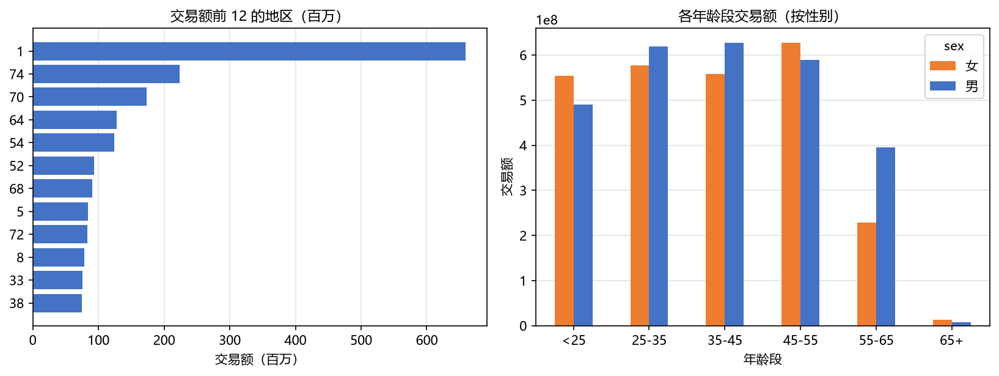
四种基础分析方法各一张：年度订单量、产品销量占比、用户年龄分布、成本-收入散点
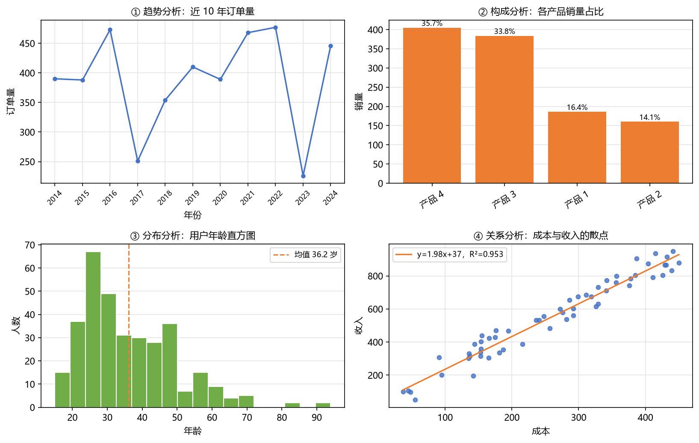
week11 达 39 小时，超出 35 小时预警线，比均值 23.9 高 63%
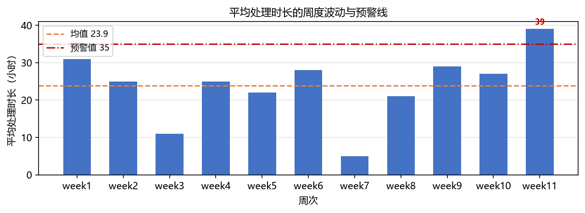
横轴份额、纵轴 8 月对 7 月环比增速；A/F/C 为明星品牌
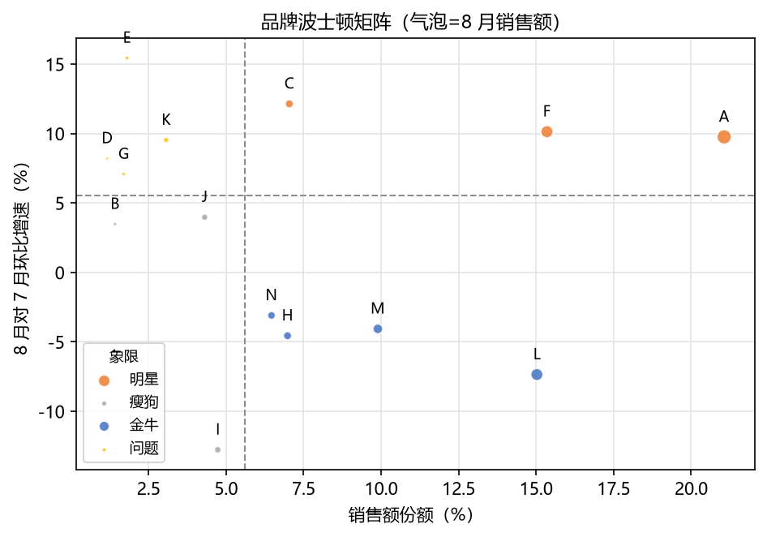
观测日 2019-08-03，与教材参考答案比对 R 100% / M 100%
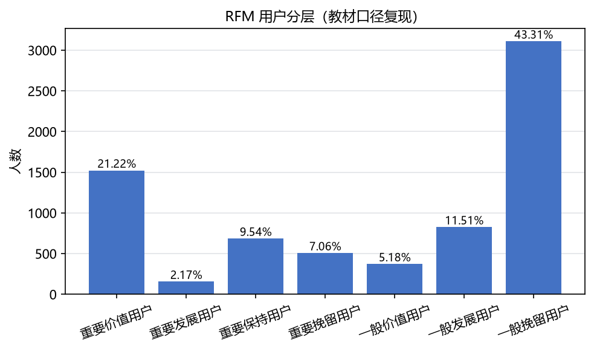
990 名会员按距今天数分为活跃 / 沉睡 / 流失预警 / 已流失
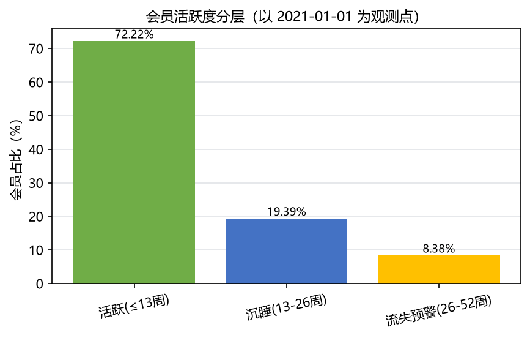
左：每日留存 D0→D30；右：窗口留存与教材矩阵逐格对齐（偏差 0.00 个百分点）
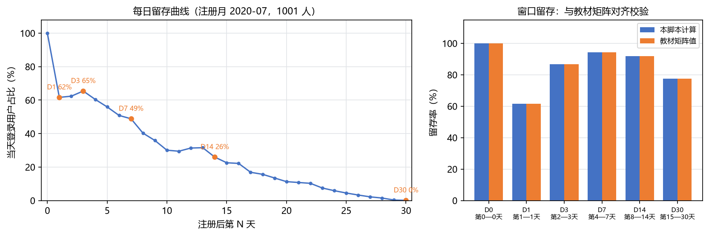
浏览 100 → 收藏 90 → 加购 80 → 购买 80；AARRR 五环节
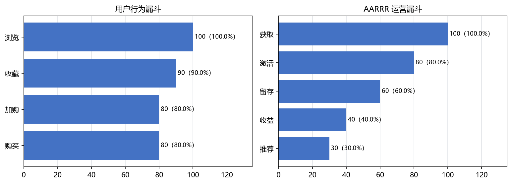
教材「分布分析-时间」案例的时序还原
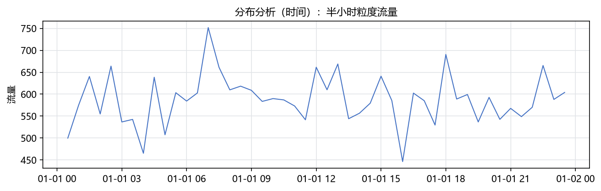
风险等级销售额、收入段客单价、年龄段利润率、购买目的 Top6
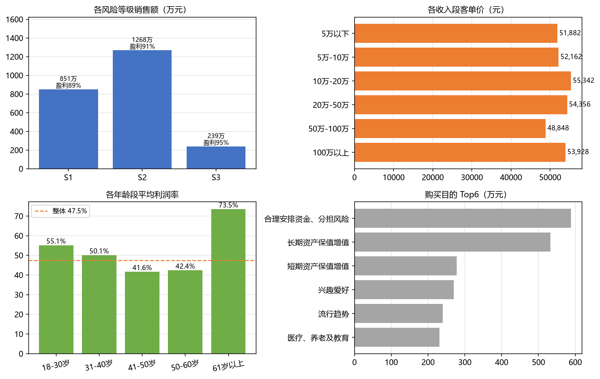
性别构成、余额分层、活跃度分层、发卡年龄分布（均值 38.3 岁）
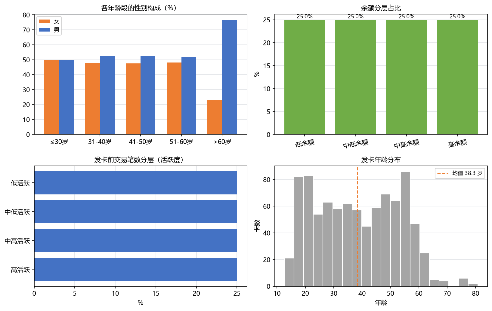
Y = T × S × I；旺季 7 月季节指数 1.237，回测 MAPE 9.56%
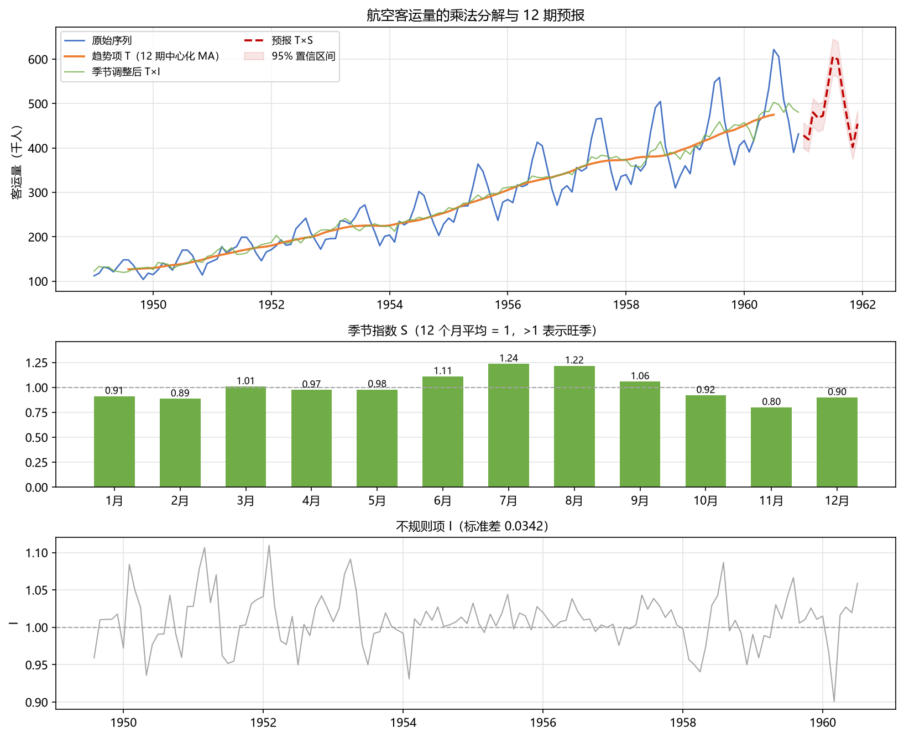
pyecharts 生成，可悬停查看数值；也可在新标签页单独打开。
py -3.13 run_all.py —— 一键跑完全部章节py -3.13 scripts/ch05_bank_kpi.py —— 单独跑某一章README.md